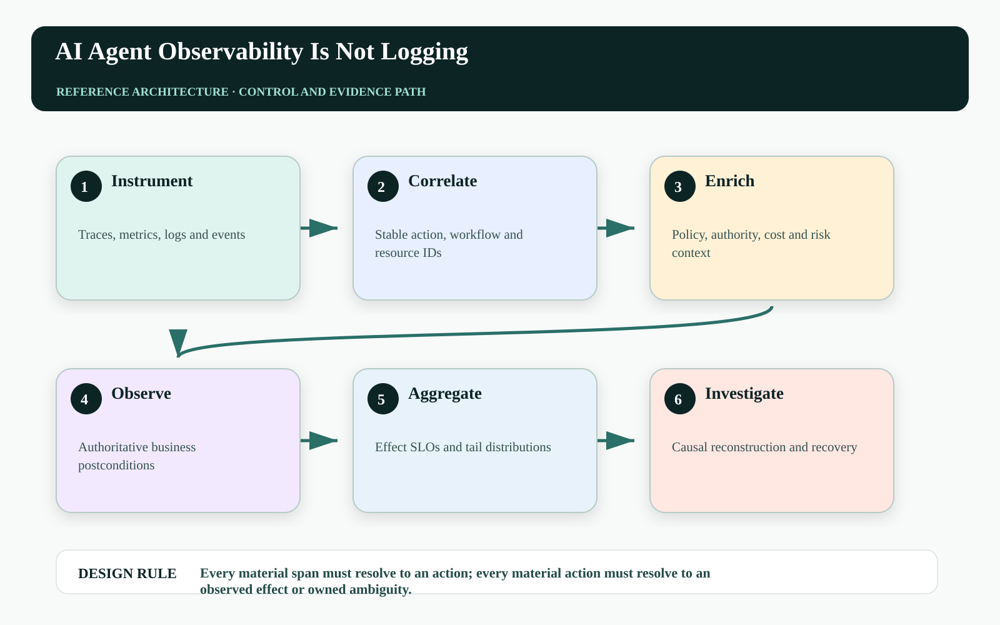
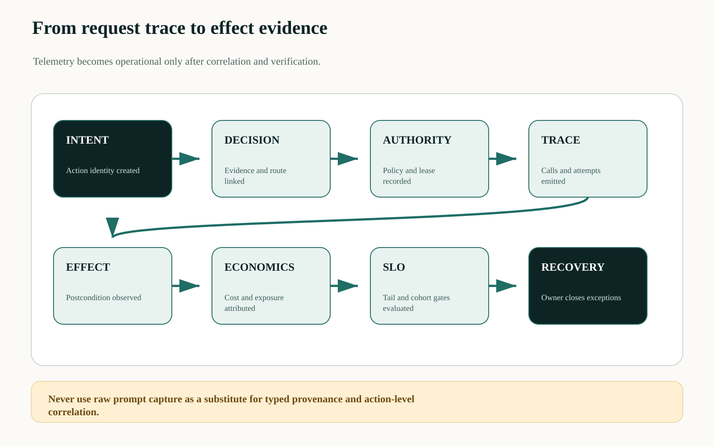
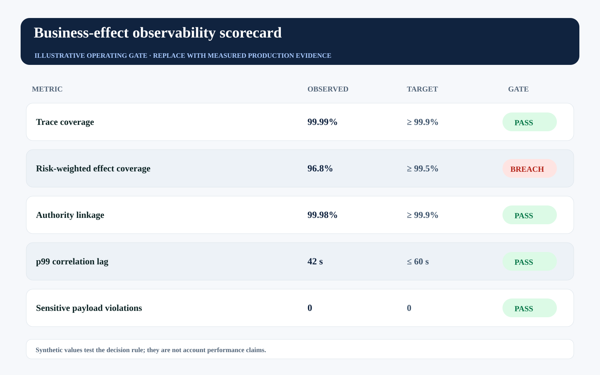

This is an editorial draft developed with AI writing and visualization assistance for human technical review before Medium publication. All incidents, thresholds, workloads, and operating values are illustrative unless a source is explicitly cited.
A million agent log lines can explain token counts, prompts, latency, and tool responses while leaving one executive question unanswered: what changed in the business, and was that change authorized and correct?
Traditional telemetry follows requests through software. Agent observability must also follow intent through decisions, authority, effects, verification, economic outcomes, and recovery. The unit is not a model call. It is a consequential business action.
Instrument the agent as a distributed system, but operate it as a portfolio of business effects.

Technical success can conceal business failure#
A green trace may end after the CRM returns success, before billing rejects the downstream adjustment. A red span may describe a harmless retry that the idempotency ledger safely absorbed. Without action identity and effect semantics, operational dashboards confuse software events with business outcomes.
Telemetry also becomes dangerous when prompts, retrieved documents, and customer data are copied indiscriminately into logs. Observability needs a data contract: identifiers and digests by default, risk-tiered payload capture, purpose limits, access controls, retention, and redaction tests.
Join four graphs around one action identifier#
The execution graph contains traces and spans. The decision graph contains evidence, model route, policy, approval, and authority. The effect graph contains intended and observed state changes. The economic graph contains cost, latency, conditional loss, and realized value. A durable action ID and versioned links connect them.
Collectors transform high-volume telemetry into action-level facts. A receipt store holds the compact proof core; trace storage supports debugging; a metric pipeline produces SLOs; an investigation view reconstructs the causal path without exposing raw sensitive context to every operator.

Define an effect observability coverage ratio#
Coverage should reward terminal business evidence, not log volume:
Coverage_effect = Σ_a risk_weight(a) × 1[trace ∧ decision ∧ authority ∧ outcome] / Σ_a risk_weight(a)
Ambiguity_load = Σ_{a ∈ unresolved} exposure(a) × age_weight(a)A low-risk summary and a binding credit should not contribute equally. The second term prioritizes unresolved actions by both economic exposure and age, preventing thousands of trivial traces from hiding a few material unknowns.
| Graph | Minimum node | Join key |
|---|---|---|
| Execution | span + attempt | trace_id + action_id |
| Decision | evidence + policy + route | decision_id + action_id |
| Authority | lease + approver | lease_id + action_id |
| Effect | expected + observed state | resource_version + action_id |
| Economic | cost + value + loss | action_id + outcome_window |
Use semantic attributes for agent actions#
A span can carry safe correlation fields without copying the full prompt:
agent.action.id = act_01K...
agent.workflow.id = renewal_771
agent.action.class = material_write
agent.policy.digest = sha256:...
agent.authority.lease_id = lease_91
agent.resource.type = crm.quote
agent.resource.version.expected = 42
agent.effect.status = inconclusive
agent.evidence.bundle_digest = sha256:...Attribute names should be governed, cardinality-aware, and privacy-reviewed. High-cardinality IDs may belong in traces and logs rather than metric labels; metrics aggregate by bounded dimensions such as action class, risk tier, route, and outcome.
Build SLOs on effects, not calls#
Useful SLOs include verified-effect rate, duplicate-effect rate, p99 ambiguity age, authority-to-effect latency, policy-denial accuracy, recovery completion, cost per verified outcome, and evidence coverage. Technical latency and error rate remain necessary drivers, not final outcomes.
The illustrative scorecard shows a trace-coverage pass and an effect-coverage breach. This is the expected diagnostic value: observability can reveal that instrumentation is present while operational truth is incomplete.

| Operating signal | Decision use | Failure interpretation |
|---|---|---|
| Effect coverage | Gate higher autonomy | Actions lack terminal business evidence |
| Correlation lag | Tune collectors and joins | Incidents cannot be reconstructed quickly |
| Ambiguity load | Prioritize by exposure and age | Unresolved consequence is accumulating |
| Payload policy violations | Stop capture and investigate | Telemetry is creating privacy or security risk |
Failure-injection before production#
A design review cannot prove Every material span must resolve to an action; every material action must resolve to an observed effect or owned ambiguity. The pre-production harness must interrupt the system at the transitions where ownership, authority, evidence, and business state can disagree. The objective is not to maximize a generic pass rate. It is to demonstrate that every material fault produces a bounded state, a named owner, and an admissible recovery transition.
| Injected fault | Experiment | Required evidence |
|---|---|---|
| Delayed or reordered work | Pause the path after DECISION and release it after EFFECT | The stale path cannot manufacture terminal success |
| Authority becomes stale | Advance policy, mode, ownership, or resource version before effect commit | The final gateway rejects the old decision context |
| Evidence is missing or corrupted | Remove one authoritative observation or change its digest | The outcome remains violated, inconclusive, or owned—never guessed |
| Recovery itself fails | Interrupt compensation, handoff, or receipt closure | The action stays visible with an owner, deadline, and next legal transition |
Run the matrix at concurrency, with realistic dependency lag and with the same policy and gateway versions used in the candidate release. Report p95 and p99 resolution alongside the worst unresolved example. Averages can demonstrate throughput; they cannot erase a single material breach. Promotion should require replayable evidence for the controls, not a slide stating that the team considered the risk.
Three questions for the architecture review#
Where is truth decided? Name the authoritative source and the exact component permitted to advance the workflow into a terminal state. If the answer is ‘the agent interprets the tool response,’ the boundary is not yet independent.
Where is authority finally enforced? Follow the command through every queue, adapter, cache, provider, and downstream effect. A policy decision is useful only when the last material write boundary can reject a stale, changed, or excessive action.
What blocks promotion? Convert the scorecard into executable gates with owners and expiry. A breached tail metric must reduce scope, hold the cohort, or enter an approved exception path; it cannot remain decorative telemetry.
A practical implementation sequence#
1. Create one action semantic convention. Standardize identifiers and bounded attributes across planner, policy, gateway, verifier, and recovery services.
2. Join one material workflow end to end. Show the trace, authority, intended delta, observed effect, cost, and owner in one investigation view.
3. Set effect SLOs. Use risk-weighted coverage and ambiguity age to control rollout rather than optimizing log completeness alone.
Primary references and boundaries#
OpenTelemetry signals cover traces, metrics, logs, and baggage; its observability primer explains distributed traces and instrumentation. The effect, decision, authority, and economic graph is an extension proposed for agent operations.
This is not a recommendation to place sensitive evidence in telemetry. Store minimal correlation and policy-safe digests in operational signals; retrieve protected evidence through access-controlled systems when an investigation requires it.
The operating conclusion#
Logs tell you that software spoke. Traces tell you where the request travelled. Agent observability must tell you which approved business effect occurred, whether it matched intent, what it cost, and who owns what remains unknown.
Can your observability platform answer ‘what business state changed?’ without reading the agent's prose?